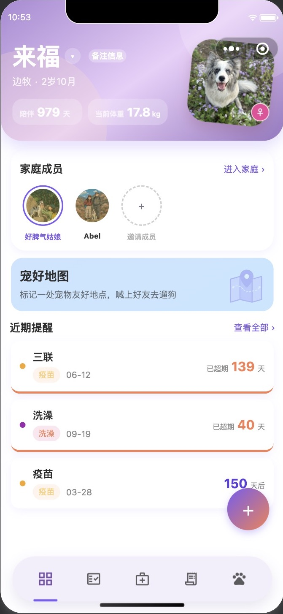
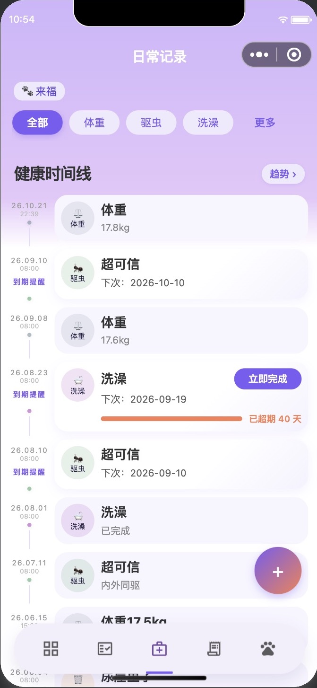
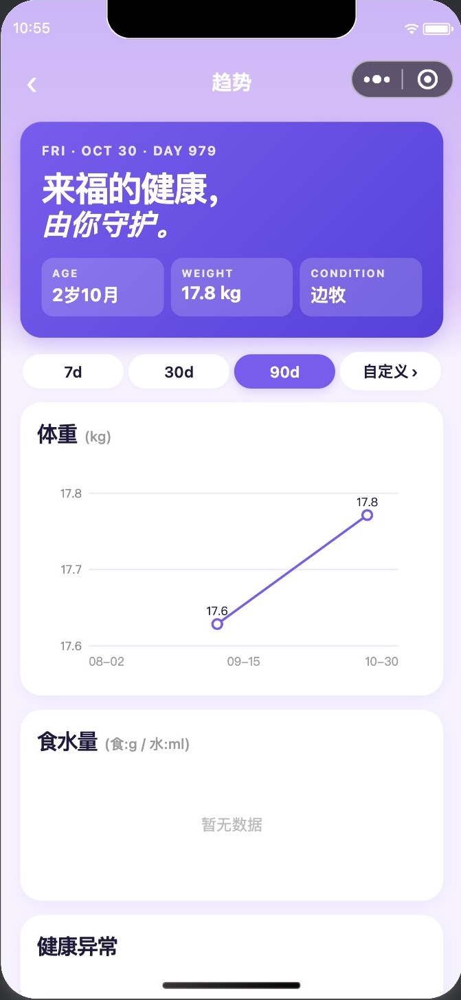
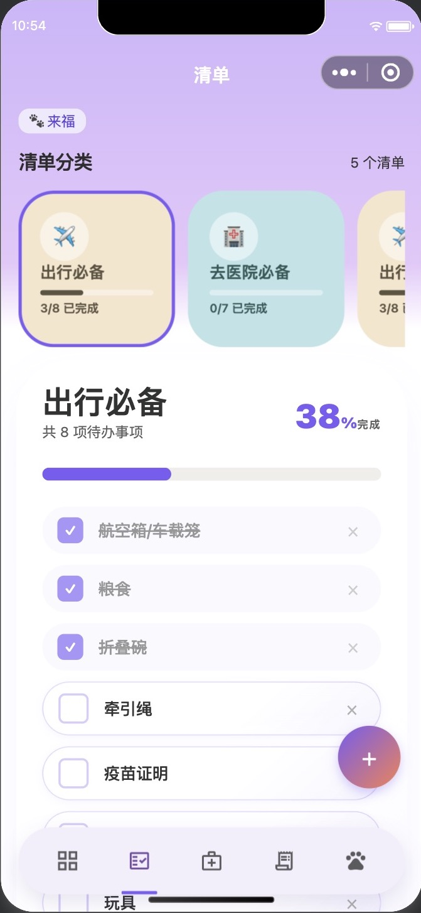
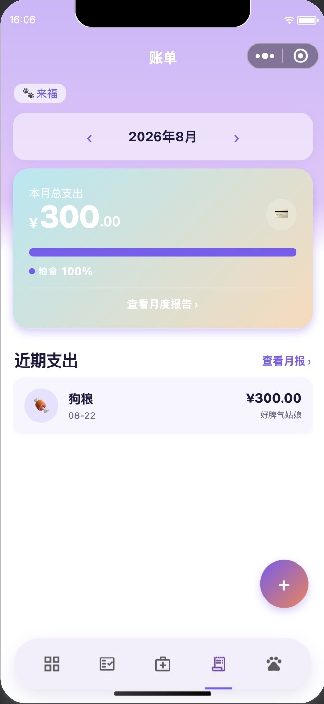

爪印日记｜把养宠的琐碎，记成陪伴的日常
养了毛孩子以后，生活里多了很多快乐，也多了很多需要记住的小事。
上次洗澡是什么时候？驱虫是不是快到时间了？最近吃得怎么样？出门的东西都带齐了吗？
我们总以为，关于它的事情，自己一定记得住。可日子一忙，信息就散落在聊天记录、手机相册和备忘录里。
爪印日记，就是想为这些细碎又重要的日常，准备一个专属的位置。
01 给毛孩子建立专属档案
它不只是“家里的猫”或“家里的狗”，更是有名字、有生日、有小脾气的家庭成员。
在爪印日记里，你可以记录头像、名字、品种、性别、生日、到家日期和体重，还能补充喜好、禁忌及照顾时需要留意的事项。家里有多位毛孩子，也能分别建档、切换查看。
邀请共养人，一起管理宠物记录；邀请亲友团，一起关注它的日常。同一份档案，让照顾少一点反复确认，多一点默契。

02 从吃喝到洗护，把日常串成时间线
“上次驱虫是什么时候？”“最近体重有没有变化？”
与其凭印象回忆，不如随手留下一条记录。
爪印日记支持体重、尿便、饮食、喝水、驱虫、疫苗、就医、给药等健康与生活记录，也能记录洗澡、剪指甲、刷牙、美容、换猫砂、清洁窝笼等日常照顾。
异常情况、偷吃，以及让人又气又好笑的“捅娄子”时刻，也有地方可记。每条记录可以填写日期、时间、详细描述，并添加图片。
那些散落在聊天记录和相册里的信息，终于有了专属的位置。

03 重要的下一次，提前安排好
驱虫、洗护、疫苗……不少养宠事项，都有一个“下次”。
创建记录时，可以开启下次提醒，设置预计日期与提醒间隔，支持自定义天数，并选择当天或前一天的提醒时间。首页会展示近期提醒，以及距离到期或超期的天数。
不用把每件事都装在脑子里，打开小程序，就能看看接下来的安排。
微信消息提醒需结合订阅授权及实际配置使用。
04 不只记下来，也能看看变化
单独看某一天的体重，可能不容易察觉变化。把一段时间的记录放在一起，就更直观了。
“趋势”页面可以查看体重曲线、食物与饮水量变化，以及健康异常、洗护和“捅娄子”的记录分布。支持切换时间范围，也能自定义查看区间。
记录不是为了制造焦虑，而是让日常观察有迹可循。
趋势图用于辅助观察，不替代专业诊断；发现健康问题，请及时咨询兽医。

05 出门前，用清单换一份安心
带毛孩子去医院、徒步或旅行，最怕到了地方才发现：“糟了，那个忘带了。”
爪印日记提供“接宠物必备”“徒步必备”“去医院必备”“出行必备”等清单模板，也支持自定义创建、增删项目。
准备好一项，就勾选一项；完成进度一眼可见。下次需要时，还可以重启清单。
把出门前的手忙脚乱，变成一项项确认后的安心。

06 给毛孩子花的钱，也记得明明白白
买粮、添玩具、做美容、去医院……每次好像没花太多，月底一算，才发现也是一笔不小的支出。
在“账单”中，可以按粮食、医疗、玩具、美容、日用等类别记账，查看月度、年度总支出、分类占比与排行，以及近六个月的消费趋势，也支持按付款人筛选。
不是给爱标价，而是让每一笔付出都有记录，让生活安排更从容。

07 带它出门，看看宠物友好地图
快乐不只在家里。
“宠物友好地图”支持列表和地图两种查看方式，可以按类别浏览已收录地点，查看地址与距离信息。下一次想带它出门，可以先来看看附近有哪些选择。
地点信息以实际收录为准，到访前请再次确认营业状态及宠物入场规则。
08 实用之外，也有有趣和温柔
🐶 DGTI 狗格测试
通过趣味问答，换个角度观察狗狗的性格，浏览狗格图鉴、回看测试记录。它不是专业行为诊断，而是一个增进了解的小话题。
🕯️ 小天使纪念馆
为离开的毛孩子留下照片、信息与寄语，也可以随机探访其他小天使，送上一句祝福。那些一起度过的日子，值得被好好记得。
🧾 记账分账 · 🍚 来吃饭
创建多人分账活动，整理共同开销与待结算情况；也能创建或加入饭局，管理菜单。照顾毛孩子，也别忘了照顾自己的生活。
从一条小记录开始
你不必一次用完所有功能。
先为它建立一份档案，记下最近一次驱虫，或从一张出行清单、一笔买粮账单开始。
慢慢地，那些容易忘记的小事，会变成清晰的日常。
爪印日记，记下每一个小脚印，也记下我们一起生活的日子。
👇 点击下方小程序卡片，开启你和毛孩子的专属记录。
【发布时插入「爪印日记」小程序卡片】